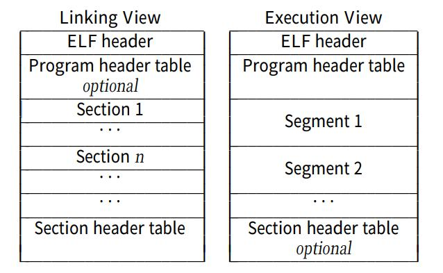
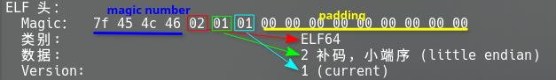
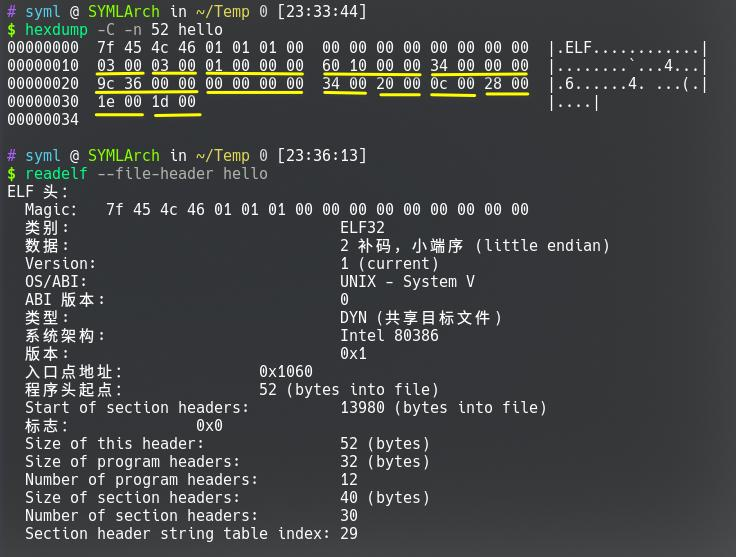
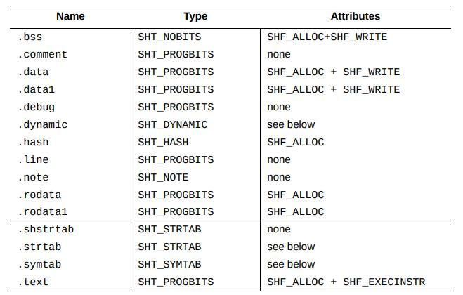
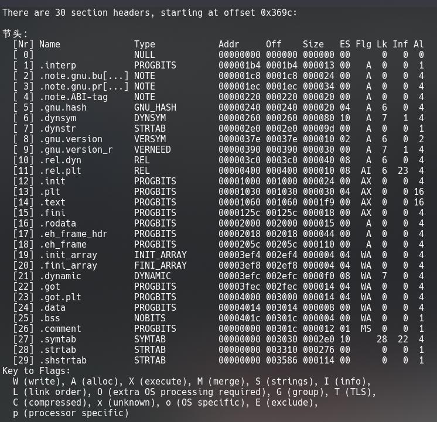
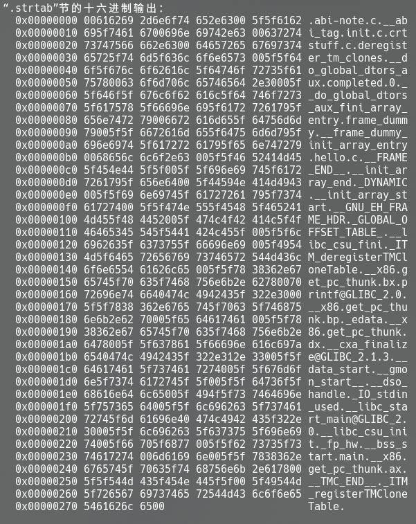
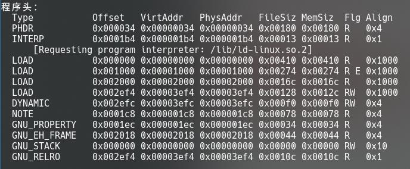

感觉这一节基本上写成文档的翻译了……
ELF文件格式
ELF(Executable and Linking Format)是IA-32架构下的可移植的对象文件格式。
ELF文件分为了三个类型：
- 可重定向文件(relocatable file)：包含了代码、数据，用来和其他对象文件链接，构成可执行文件或者共享文件。
- 可执行文件(executable file)：包含了可以执行的程序，这个文件也说明了如何去创建进程的镜像。
- 共享对象文件(shared object file)：可以被链接器和其他的可重定向文件或者共享对象文件创建成新的对象文件。
对象文件参与程序链接和程序的执行，对于这两件事情，对象文件格式提供了两个并行的视图也就是链接视图和执行视图：

其中，ELF头(ELF header)在最开始部分，其中存放了程序的文件组织结构信息。节(section)用于链接视图，其中存放了链接视图需要的大部分信息，包括了指令、数据、符号表和重定向信息等等。段(segment)则是用于执行视图，包括代码段、数据段等等。
程序头表(program header table)用来告知系统如何去创建一个进程的镜像，如果一个文件需要用来执行（也就是可执行文件），那么它就必须得有一个程序头表，而像可重定向文件就不一定要有。节头表(section header table)则是包括了描述文件中各个节的信息，每个节在表中都有对应的一个表项，其中包括节的名称、大小等信息。如果一个文件需要被用来链接，那么它就必须得有节头表。
在一个ELF文件中，上面的这些部分除了ELF头必须位于最开始固定的位置，其他的各个部分顺序实际上都是可以打乱的。
数据类型
32位的对象文件中有这些数据类型：
| 名称 | 大小 | 对齐 | 用途 |
|---|---|---|---|
Elf32_Addr |
4 |
4 |
无符号 程序地址 |
Elf32_Half |
2 |
2 |
无符号 中等大小整数 |
Elf32_Off |
4 |
4 |
无符号 文件偏移 |
Elf32_Sword |
4 |
4 |
有符号 大整数 |
Elf32_Word |
4 |
4 |
无符号 大整数 |
unsigned char |
1 |
1 |
无符号 小整数 |
在必要的情况下，数据中会增加填充来保证4字节的对象以4字节为单位对齐。
ELF头
ELF头的定义如下：
1 |
|
这些字段的作用分别是：
e_ident
全名是ELF Identification，实际上就是magic number和一些其他的信息，用来标识文件的类型是对象文件，还有机器无关的数据用来解码和翻译文件的内容。
ELF文件格式这个框架实际上是支持多种处理器架构和编码方式的，e_ident这个字段的作用也就是为了这个兼容性。
e_ident的前四字节就是magic number，用来标识这个文件是ELF文件：
| 名称 | 值 |
|---|---|
ELFMAG0 |
0x7f |
ELFMAG1 |
'E'(0x45) |
ELFMAG2 |
'L'(0x4c) |
ELFMAG3 |
'F'(0x46) |
第五个字节即e_ident[4]是EI_CLASS，标识了文件对象是32位或是64位：
| 名称 | 值 | 含义 |
|---|---|---|
ELFCLASSNONE |
0 | 无效的文件类型 |
ELFCLASS32 |
1 | 32位文件 |
ELFCLASS64 |
2 | 64位文件 |
第六个字节即e_ident[5]是EI_DATA，标识了文件对象的字节序：
| 名称 | 值 | 含义 |
|---|---|---|
ELFDATANONE |
0 | 无效的字节序 |
ELFDATA2LSB |
1 | 小端字节序 |
ELFDATA2MSB |
2 | 大端字节序 |
第七个字节即e_ident[6]为EI_VERSION，即ELF的文件版本。
e_ident中的剩余部分为EI_PAD，作为保留部分填充为0，尚未使用。
以一个程序为例，我们使用readelf读取其ELF头部分信息，其中e_ident字段和其中的解析结果为：
1 | 7f 45 4c 46 02 01 01 00 00 00 00 00 00 00 00 00 |

还挺清楚的哈。
e_type
这个字段标识了对象文件的类型：
| 名称 | 值 | 含义 |
|---|---|---|
ET_NONE |
0 | 无类型 |
ET_REL |
1 | 可重定位文件 |
ET_EXEC |
2 | 可执行文件 |
ET_DYN |
3 | 共享对象文件 |
ET_CORE |
4 | 核心转储 |
ET_LOPROC |
0xff00 | 针对处理器特定 |
ET_HIPROC |
0xffff | 针对处理器特定 |
e_machine
这个字段标识了文件对应的处理器架构：
| 名称 | 值 | 含义 |
|---|---|---|
EM_NONE |
0 | 无 |
EM_M32 |
1 | AT&T WE 32100 |
EM_SPARC |
2 | SPARC |
EM_386 |
3 | Intel架构 |
EM_68K |
4 | Motorola 68000 |
EM_88K |
5 | Motorola 88000 |
EM_860 |
7 | Intel 80860 |
EM_MIPS |
8 | MIPS RS3000 大端序 |
EM_MIPS_RS4_BE |
10 | MIPS RS4000 大端序 |
RESERVED |
11-16 | 保留 |
e_version
这个字段指定了对象文件的版本。包括了两个值：EV_NONE即0，代表无效版本；EV_CURRENT即1代表了当前版本。
e_entry
这个字段给了系统转交控制的虚拟地址，也就是进程开始的地址。
如果程序没有入口点，那么这个参数的字段就是0。
e_phoff
这个字段是程序头表位置的偏移量。如果没有程序头表，那么这个字段值为0。
e_shoff
这个字段是节头表位置的偏移量。如果没有节头表，那么这个字段值为0。
e_flags
这个字段是文件有关的处理器特定的标识。
e_ehsize
这个字段是ELF头的长度（以字节为单位）
e_phentsize
这个字段是文件的程序头表中一个条目的长度，以字节为单位。表中的每个条目的长度都是相等的。
e_phnum
这个字段标识了程序头表中的条目数。如果没有程序头表，那么这个字段值为0。通过和e_phentsize字段相乘，可以计算出程序头表的大小。
e_shentsize
这个字段是文件的节头表中一个条目的长度，和前面的类似。
e_shnum
这个字段是节头表中的条目数，和前面计算类似。
找了一个例子： 1
2
3
4
5
6
7
8
9
10
11
12
13
14
15
16
17
18
19
20
21
22
23
24
25
26
27
28
29gcc hello.c -o hello -mtune=i386 -m32
$ hexdump -C -n 52 hello 0 [23:33:44]
00000000 7f 45 4c 46 01 01 01 00 00 00 00 00 00 00 00 00 |.ELF............|
00000010 03 00 03 00 01 00 00 00 60 10 00 00 34 00 00 00 |........`...4...|
00000020 9c 36 00 00 00 00 00 00 34 00 20 00 0c 00 28 00 |.6......4. ...(.|
00000030 1e 00 1d 00 |....|
00000034
ELF 头：
Magic： 7f 45 4c 46 01 01 01 00 00 00 00 00 00 00 00 00
类别: ELF32
数据: 2 补码，小端序 (little endian)
Version: 1 (current)
OS/ABI: UNIX - System V
ABI 版本: 0
类型: DYN (共享目标文件)
系统架构: Intel 80386
版本: 0x1
入口点地址： 0x1060
程序头起点： 52 (bytes into file)
Start of section headers: 13980 (bytes into file)
标志： 0x0
Size of this header: 52 (bytes)
Size of program headers: 32 (bytes)
Number of program headers: 12
Size of section headers: 40 (bytes)
Number of section headers: 30
Section header string table index: 29

作为对照，可以看到ELF头各个字段的意义。注意，这里数据是小端序的，比如说60100000实际上是0x00001060，需要区分一下。
节头表
对象文件的节头表是一系列Elf32_Shdr结构体构成的数组，给出了各个节的相关信息。
这个数组中一些下标是保留的，对象文件不能使用这些下标：
| 名称 | 值 | 描述 |
|---|---|---|
SHN_UNDEF |
0 | 未定义、缺失、无意义等 |
SHN_LORESERVE |
0xff00 | 指定了保留下标的下界 |
SHN_LOPROC~SHN_HIPROC |
0xff00~0xff1f | 保留给处理器特定的语义 |
SHN_ABS |
0xfff1 | 指定了相应参考的绝对值。相对于这个节号定义的符号不受到重定位的影响 |
SHN_COMMON |
0xfff2 | 通用符号 |
SHN_HIRESERVE |
0xffff | 指定了保留下标的上界 |
节中包括了对象文件除了ELF头、程序头表和节头表之外的所有信息。节还需要满足这些条件：
- 每个节都有一个来描述它的节头（可能存在一个节头没有对应的节）。
- 每个节都占据一段连续字节的空间（也可能是0）。
- 节不能重叠。
- 头部和节可能不会覆盖文件中的所有空间。
节头的数据结构定义如下：
1 | typedef struct{ |
具体属性定义
sh_name
这个字段是节的名字，其中的值这是指向节头的字符串节的地址，对应一个以0结尾的字符串。
sh_type
这个字段表述了节的内容和语义。其中包括了下面这些类型：
| 名称 | 值 | 描述 |
|---|---|---|
SHT_NULL |
0 | 这个节头是inactive的，没有其对应的节 |
SHT_PROGBITS |
1 | 这个节是程序定义的信息，格式和意义取决于程序 |
SHT_SYMTAB |
2 | 符号表 |
SHT_STRTAB |
3 | 字符串表 |
SHT_RELA |
4 | 有确定的加数的重定位信息，如ELF32_Rela |
SHT_HASH |
5 | 符号哈希表 |
SHT_DYNAMIC |
6 | 动态链接信息 |
SHT_NOTE |
7 | 文件标记信息(information that mark the file) |
SHT_NOBITS |
8 | 在文件中不占用空间，其他类似SHT_PROGBITS。尽管这个节不会占据空间，它也会有一个理论上的大小。 |
SHT_REL |
9 | 没有确定加数的重定位信息，如ELF32_Rel |
SHT_SHLIB |
10 | 保留 |
SHT_DYNSYM |
11 | 符号表 |
SHT_LOPROC~SHT_HIPROC |
0x70000000~0x7fffffff | 保留给处理器特定 |
SHT_LOUSER |
0x80000000 | 为程序保留的地址的下界 |
SHT_HIUSER |
0xffffffff | 为程序保留的地址的上界 |
sh_flags
表示了各种杂项的1比特标识：
| 名称 | 值 | 作用 |
|---|---|---|
SHF_WRITE |
0x1 | 节中存放了在进程执行时可写的数据. |
SHF_ALLOC |
0x2 | 标识了这个节在程序运行时是否会占据内存。有一些控制节是不会驻留在内存镜像中的，这些节的这个属性就会被关闭. |
SHF_EXECINSTR |
0x4 | 标识了这个节含有可执行的机器指令. |
SHF_MASKPROC |
0xf0000000 | 保留给处理器 |
sh_addr
如果一个节在会出现在进程的内存镜像中，那么这个成员的值就是节中第一个字节在内存中的地址，否则就是0。
sh_offset
从文件开始到这个节头对应的节的第一个字节的偏移量。
上面提到了不占据空间的SHT_NOBITS类型，对于这种类型，这个成员的值是这个节在理论上占据的位置。
sh_size
这个成员以字节为单位给出了节的大小。如果是不占据空间的SHT_NOBITS节，这个属性也可能不为0，只是实际上这个节不占据空间罢了。
sh_link和sh_info
sh_link是节头表的索引链接，sh_info是这个节的额外信息。这两个字段的含义取决于节的类型：
|sh_type|sh_link|sh_info|
|SHT_DYNAMIC|这个节中条目使用到的字符串表在节头表中的下标|0|
|SHT_HASH|这个节中哈希表应用到的符号表在节头表中的下标|0|
|SHT_REL和SHT_RELA|相关的符号表在节头表中的下标|重定向影响到的节在节头表中的下标|
|SHT_SYMTAB和SHT_DYNSYM|内容和操作系统有关|内容和操作系统有关|
|其他|SHN_UNDEF|0|
sh_addralign
有一些节要求地址对其。这个属性给出了对齐的单位，sh_addr属性必须是这个值的整数倍。
这个属性的值应该是0或者2的整数次幂，如果值为0或者1，则表示不需要对齐。
sh_entsize
如符号表等一些节中的内容是固定长度的一系列条目，对于这样的节，这个属性给出了以字节为单位的每个条目的大小。如果是0，则表示这个节中没有放置固定长度条目表。
Index 0 节
前面提到了下标为0的节是SHN_UNDEF，但是这个节实际上是存在的，也就是说比如这个程序有4个节，那么下标是0～3，其中也就包括了这个SHN_UNDEF。
其中的条目是这样的：
| 属性 | 值 | 作用 |
|---|---|---|
sh_name |
0 | 没有名称 |
sh_type |
SHT_NULL |
inactive |
sh_flags |
0 | 没有标志 |
sh_addr |
0 | 没有地址 |
sh_offset |
0 | 没有偏移 |
sh_size |
0 | 没有大小 |
sh_link |
SHN_UNDEF |
没有链接 |
sh_info |
0 | 没有信息 |
sh_addralign |
0 | 没有对齐 |
sh_entsize |
0 | 没有条目 |
总之啥也没有。
特殊的节
可执行文件的创建过程需要经过链接，链接器可以解决不同对象文件之间的依赖关系、调整对象文件之间的引用并重定位代码。这一个过程需要一些特定的节内部存储的信息，如.dynamic节中的信息。
实际上，操作系统支持两种链接方式，即动态链接和静态链接。
- 静态链接：静态地绑定一系列的对象文件、系统库和其他的库文件，解析引用关系并且创建一个自包含的可执行文件。
- 动态链接：将一系列对象文件、库、系统资源和其他的共享库链接在一起创建一个可执行文件。在加载这个可执行文件的时候，那些动态链接库和共享资源也必须可用。
此外，还有一些节用来支持调试、程序控制等等。

下面是这些节的作用：
.bss
这个节存储了没有初始化的全局数据，在程序开始运行时，系统会将这些数据置为0。
这个节实际并不占据文件空间（SHT_NOBITS）。
.comment
包含了版本控制信息
.data和.data1
包含了已经初始化的全局数据。
.debug
包含了用于符号调试的信息。
.dynamic
包含了动态链接信息。
.hash
表明这个节里面有符号哈希表。
.line
包含了用于调试的行号等信息。
.note
包含了程序文件标记相关的信息。
.rodata和.rodata1
程序中的只读数据。
.shstrtab
节的名称。
.strtab
这个节中包括了主要是和符号表有关的字符串。
.symtab
这个节中包括了符号表。
.text
这个节中包括了可执行的指令。
以一个程序（readelf -S）为例，其中包括了下面这些节：

字符串表
字符串表中存储的是以零字符结尾的字符串，其中包括了符号的名字、节的名字等等。对于字符串表的引用就是一个在字符串表中的下标。
字符串表的第一个字符是零字符，如果一个名称指向这个字符，则表示没有名称或者这个名称为空。同时，字符串表最后一个字符是零字符，这样的目的是使得所有的字符串都能够正常结束。
实际上字符串表可以为空（其sh_size字段为0），这样，但是所有对这个字符串表的引用下标必须都是0。
通过readelf -x命令读取字符串表.strtab所在的节，能够得到下面的信息：

可以看到其开头和结尾都是字节0x00，每个字符串的结束也都是字节0x00。
程序头表
程序头表中存储的一系列数据结构可以用来告知系统执行这个程序需要那些信息。表中的每一个条目代表了对应的一个段的有关信息，一个段可以包括多个节。
程序头表中单个的数据结构定义是这样的：
1 | typedef struct { |
其中各个字段的作用如下：
| 字段名称 | 描述 |
|---|---|
p_type |
对应的段的类型或者如何解释这个段中的元素 |
p_offset |
段第一个字节相对于文件开始位置的偏移 |
p_vaddr |
段在内存中驻留的第一个字节的位置 |
p_paddr |
在物理寻址相关的系统上，用来作为段的物理地址（针对特定系统） |
p_filesz |
以字节为单位的，段的大小（可以是0） |
p_memsz |
以字节为单位的，段需要占据的内存空间（可以是0） |
p_flags |
段的标志 |
p_align |
段对齐，具体和前面节的对齐类似 |
p_type
根据p_type的取值，段有这些类型：
| 类型 | 值 | 描述 |
|---|---|---|
PT_NULL |
0 | 未使用或者未定义的。 |
PT_LOAD |
1 | 表明一个可以加载的段，这个段中的字节会映射到内存中。如果段分配的内存大于文件实际的大小，多余的空间会被置0。当然分配的内存空间一定要大于文件中段的大小。数据段、代码段都是这种类型。 |
PT_DYNAMIC |
2 | 标记了动态链接信息。 |
PT_INTERP |
3 | 其中指明了解释器的路径。 |
PT_NOTE |
4 | 指明了辅助信息的位置和文件的大小。 |
PT_SHLIB |
5 | 保留。 |
PT_PHDR |
6 | 指明了在文件中和在内存中程序头表的位置和大小。 |
PT_LOPROC~PT_HIPROC |
0x70000000~0x7fffffff | 保留给处理器特定语义 |
通过readelf -l读取一个程序的程序头表信息：

总结
这边其实还有好多可以说的内容，比如说ELF的符号表、重定向这些，以及程序的链接和装载等，以后开一个坑出来专门讲。
参考资料
[1] 《软件逆向工程——原理与实践》，孙聪 等著，西安电子科技大学出版社。
[2] Tool Interface Standard (TIS) Executable and Linking Format (ELF) Specification, v1.2